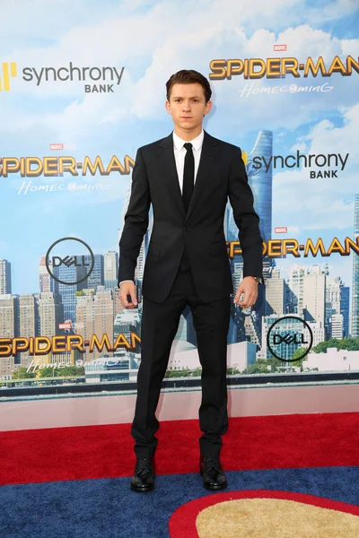

«Том» Хо́лланд (англ. Thomas Stanley "Tom" Holland; род. 1 июня 1996[1], Кингстон-апон-Темс, Лондон, Великобритания) — английский актёр. Широкую известность получил после исполнения роли Человека-паука в кинематографической вселенной Marvel. Выпускник Лондонской школы исполнительского искусства и технологий (BRIT School) начал свой актёрский путь на сцене в одиннадцатилетнем возрасте с исполнения главной роли Билли Эллиота в одноимённом мюзикле в лондонском театре Вест-Энда, в котором Томас Холланд выступал с 2008 по 2010 год. Первая известность встретила пятнадцатилетнего Томаса после исполнения главной роли в картине 2012 года «Невозможное», которая принесла ему награду Лондонского кружка кинокритиков в категории «Самый многообещающий молодой английский актёр». В 2017 году двадцатилетний Томас Холланд стал третьим самым юным лауреатом награды Британской академии «BAFTA» в категории «Восходящая звезда».
